Integrated M.S. & Ph.D., Graduate School of AI
- Advisor: Gary Geunbae Lee
- Cumulative GPA: 4.15 / 4.3
- Research Area: Data Synthesis, Conversational QA, Multi-hop QA, Question Generation, LLM Evaluation
Ph.D. | LLM/NLP Research Engineer
자연어처리, 대규모 언어모델, 생성형 AI 기반의 데이터 생성, 모델 학습, 자동 평가, 질의응답 시스템 개발 경험을 보유한 AI 연구개발 엔지니어입니다. 박사과정 동안 자동 질문 생성, QA 데이터 합성, cross-lingual transfer, 난이도 제어 기반 문항 생성 연구를 수행하며 데이터 부족 문제를 해결하기 위한 방법론을 연구했습니다. LLM 기반 데이터 합성 및 평가, QA/RAG 시스템 개발, 다국어 AI 모델링, PEFT 기반 모델 학습, 벤치마크 데이터셋 구축 경험을 바탕으로 데이터 구축부터 모델 개발, 평가 자동화까지 연결되는 AI 파이프라인 설계와 구현에 강점이 있습니다.
학습용 문항의 난이도를 조절할 때 지문의 길이, 어휘 수준, 추론 복잡도 등의 문항 특징(item features)을 제어하는 방식의 효과가 입증되었음. 하지만 단일 LLM prompting 방식은 세부 제약 사항 미준수 및 난이도 조절의 불확실성 문제가 존재함. 본 연구는 대규모 학습자 응답 데이터가 부재한 상황에서도 정교하고 일관된 난이도의 독해 문항을 생성할 수 있는 프레임워크 구축을 목표로 함.
LLM 기반의 Role-specialized agent들과 evaluator들로 구성된 멀티 에이전트 프레임워크인 MAFIG를 제안함. 본 프레임워크는 에이전트들 간의 협업 및 반복적인 문항 개선을 통해 multi-dimensional constraints를 준수하는 독해 문항을 생성함. 또한 교육학적 원리를 반영한 difficulty-calibrated feature constraint sequence를 설계하여, 생성된 문항 간의 명확하고 일관된 난이도 위계를 보장함. 실험 결과, GPT-5 기반의 prompting-based baseline 대비 constraint satisfaction 및 difficulty calibration 면에서 우수한 성능을 기록함.
문제 정의, 관련 연구 탐색, 방법론 설계 및 구현, 실험 및 분석, 논문 작성 등 전 과정을 수행함.
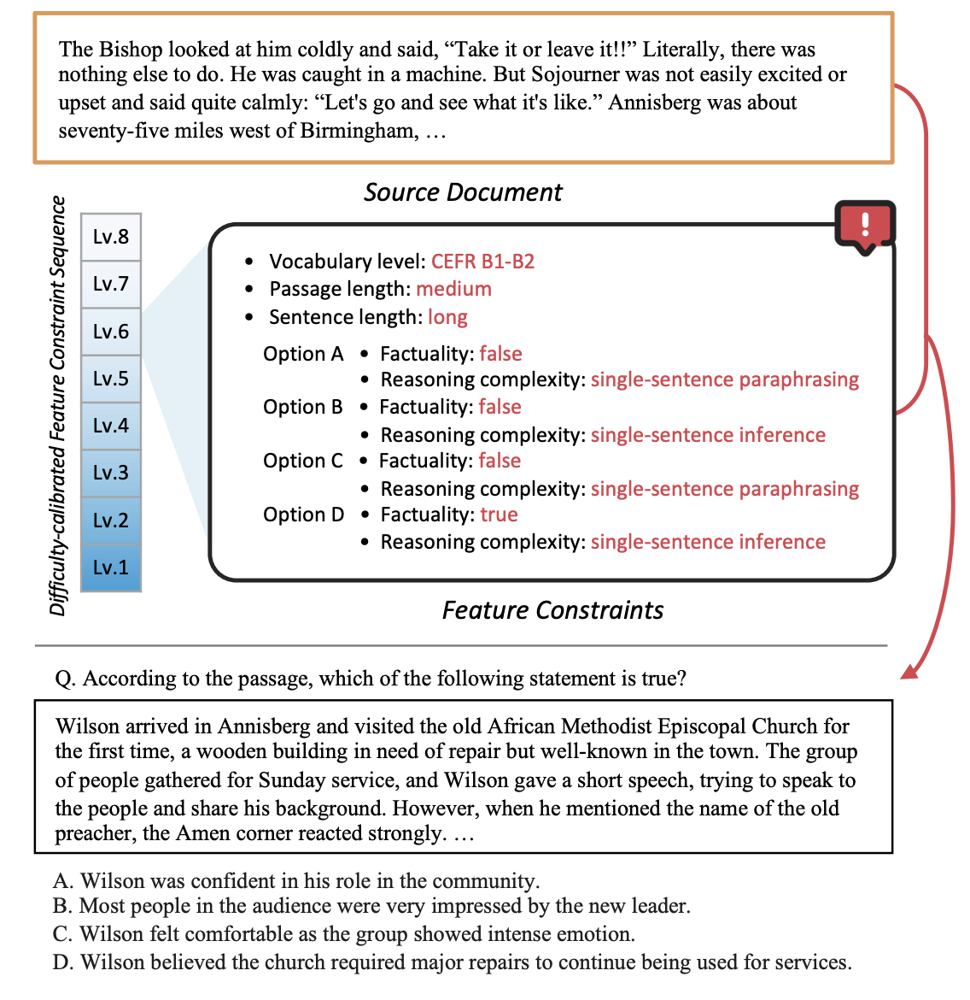
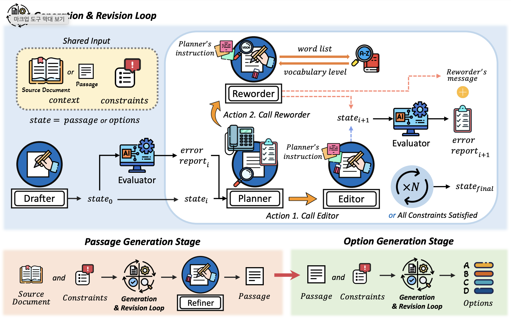
Qwen3, GPT-oss 등 Reasoning Language Models(RLMs)에서 발생하는 high-resource 언어와 low-resource 언어 간의 multilingual reasoning gap의 근본적인 원인을 규명하고자 함.
모델의 추론 과정을 input understanding, reasoning, response generation의 3단계로 정형화하고, 각 단계에서의 실패가 최종 성능에 미치는 영향을 stage-wise attribution analysis를 통해 수치적으로 분석함. 결과적으로 low-resource 언어에서 발생하는 추론 오류의 핵심 원인이 understanding 단계에서의 실패임을 입증함. 또한 understanding 실패를 자동으로 탐지하기 위해 supervised detector 등 다양한 방법론들을 적용하여 understanding 실패 신호의 탐지 가능성을 확인했으며, 실패가 감지될 때만 선별적으로 번역을 수행하는 Selective Translation 기법의 효과를 확인함. 해당 기법을 통해 약 20%의 입력만 번역하고도 full translation에 근접한 성능 향상을 달성하며 추론 효율성과 정확도를 동시에 확보함.
방법론 및 실험 설계, 논문 작성 등 참여함.
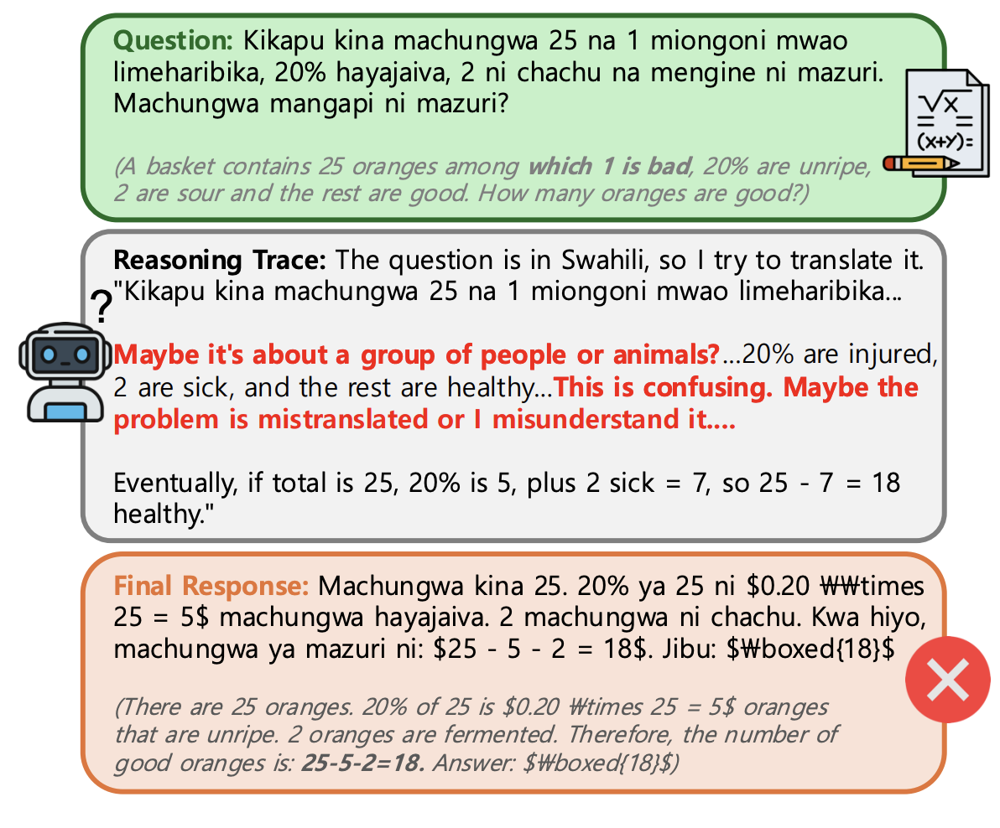
Multiple-choice cloze question 생성 시 난이도가 조절된 고품질의 오답 선택지를 생성하는 데 따르는 한계를 해결하고자 함. 특히 난이도가 라벨링된 데이터셋의 부족과 기존 모델들의 난이도 제어 성능 저하 문제를 극복하고자 함.
Information restriction 기반의 two-way data augmentation 파이프라인을 설계하여 난이도별로 라벨링된 대규모 오답 데이터셋을 구축함. 이를 바탕으로 auxiliary task가 포함된 multitask learning을 적용해 선택지 생성 모델이 정답과 오답의 차이를 명확히 구분하고 의도한 난이도(Easy/Hard)를 정확히 반영하도록 sLLM을 파인튜닝함. 실험 결과, GPT-4o 기반 prompting 방법론 대비 difficulty alignment 및 invalid distractor ratio 면에서 월등한 성능을 입증함.
실험 설계 개선, 논문 작성 등 참여함.
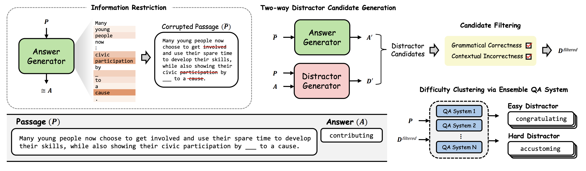
지문 내에서의 Evidence Scope(근거 범위) 및 지문과 선택지 간의 Transformation Level(변형 정도) 등 인지적 복잡도 결정하는 특성들은 독해 문항의 난이도를 결정하는 핵심 요소로 알려져 있음. 지문 길이, 어휘 난이도 등의 표면적 특성들과 달리, 분석 과정에서 전문가의 판단에 의존해온 고차원적 인지 요인을 LLM의 추론 능력을 통해 자동 측정할 수 있는지 확인하고자 함.
인지적 복잡도를 기준으로 문항을 라벨링한 데이터셋 ReCo를 구축하여 8종의 LLM을 대상으로 복잡도 측정 능력을 평가했으며, 최신 오픈소스 모델들이 GPT-4o와 대등하거나 이를 상회하는 수준으로 인지적 요인을 근사할 수 있음을 입증함. 다만, 모델이 문항의 정답을 맞히더라도 생성한 풀이 과정에 포함된 인지적 특성을 명시적으로 식별하는 데에는 한계가 있음을 확인함.
문제 정의, 관련 연구 탐색, 어노테이션 과정 설계 및 진행, 실험 및 분석, 논문 작성 등 전 과정을 수행함.
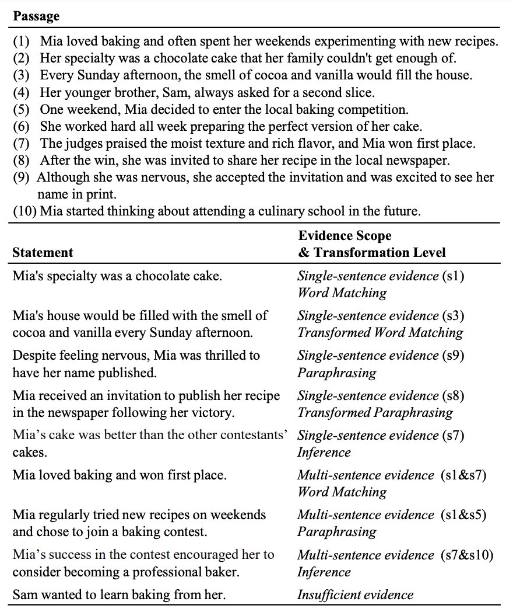
Hallucination 위험이 크고 복잡한 법률 도메인에서, 조문에 근거한 개방형 QA 및 multi-hop reasoning 능력을 정밀하게 평가하고 향상시키고자 함. 단순 검색을 넘어 법률 전문가 수준의 지식 기반 조문 해석과 multi-hop reasoning 능력을 확인할 수 있는 한국어-영어 bilingual 벤치마크 및 고성능 QA 프레임워크 구축을 목표로 함.
관련 조문을 탐색해 multi-hop QA 쌍을 생성하는 파이프라인을 설계함. 또한 합성 데이터에 대한 전문가의 교차 검증 및 필터링을 통해 226개의 고품질 데이터로 구성된 bilingual 벤치마크인 KOBLEX를 구축함. 한편으로, LLM의 내부 지식을 활용해 가상의 조문을 생성함으로써 검색 효율을 높이는 ParSeR 방법론과, 법률적 충실도를 측정하는 L-FEval metric을 제안함. 실험 결과, KOBLEX 벤치마크에서 ParSeR가 기존 RAG 기반 방법론 대비 조문 검색 및 답변 품질 면에서 SOTA 성능을 달성함.
데이터 생성 파이프라인 및 ParSeR 방법론 설계, 전문가 평가 진행, 논문 작성 등 참여함.
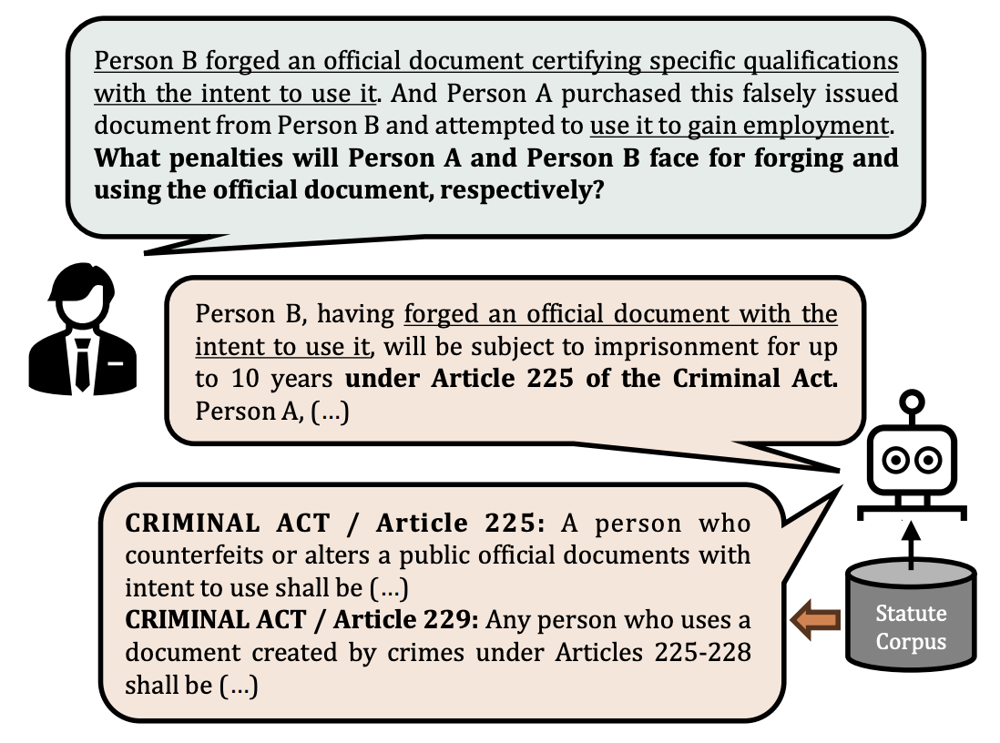
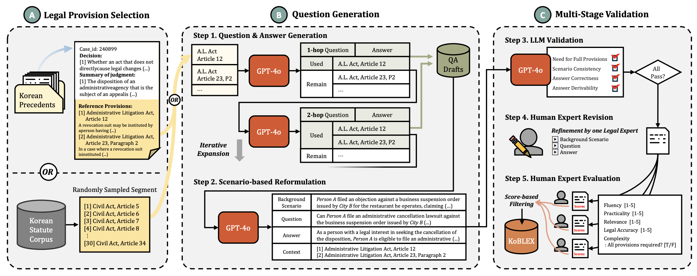
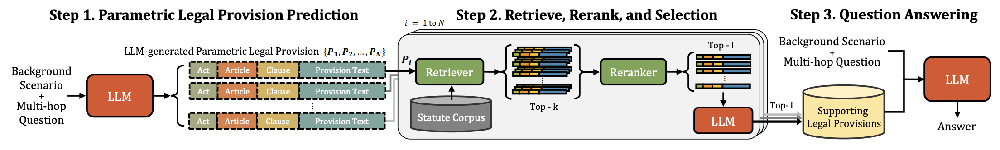
이중 언어 사용자들이 한 문장 내에서 여러 언어를 혼용하는 code-switching 현상이 실제 HCI 환경에서 빈번하게 발생함에도 불구하고, 이러한 형태의 질의에 대한 모델 성능을 평가할 수 있는 Information Retrieval(IR) 벤치마크가 부재함. 기존의 검색 모델들이 실제 사용자가 생성한 mixed-language query를 효과적으로 처리할 수 있는지 확인하고, code-switching 전략이 검색 효율성에 미치는 영향을 분석할 수 있는 기반을 마련하고자 함.
실제 이중 언어 사용자들이 작성한 최초의 mixed-language query 벤치마크인 MiLQ를 구축하여 공개하고, 기존 다국어 IR 모델들의 mixed-language query IR 성능에 대한 baseline을 제시함. 실험을 통해 의도적인 영어 용어 혼용이 영문 문서 검색 성능을 유의미하게 향상시키는 효과적인 전략임을 확인했으며, 토큰 단위 분석을 통해 언어 혼용이 검색 결과에 기여하는 구체적인 메커니즘을 밝힘.
실험 설계 및 결과 분석에 대한 토론, 논문 작성 등 참여함.
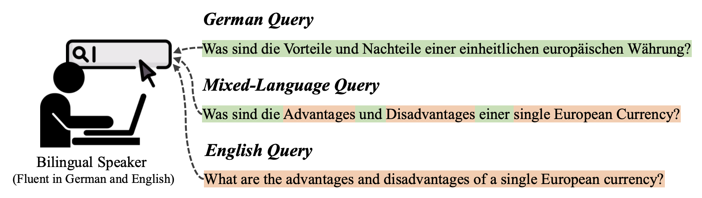
다양한 유형의 영어 QA 데이터가 공개 되어있는 반면, 타언어에서는 데이터 부족 문제를 겪고 있음. 타언어의 데이터를 구축하여 모델을 훈련시키거나 고비용의 다국어 LLM을 활용하지 않고도, 영어 데이터만으로 학습된 모델을 다양한 언어의 QA 데이터 생성에 활용할 수 있도록 하는 효율적인 cross-lingual transfer 방법론을 찾고자 함.
질문의 맥락 텍스트와 목표 답변을 기반으로 생성될 질문의 의문사를 예측하는 모델과, 텍스트, 답안, 그리고 예측된 의문사에 해당되는 소량의 question exemplar를 입력 받아 질문을 생성하는 모델로 구성된 QuIST 프레임워크를 제안함. 질문 생성 모델은 주어진 텍스트와 답변에 부합하는 질문의 semantic을 구성하면서도, question exemplar의 통사 구조를 반영하여 질문을 생성하도록 훈련됨. 이러한 훈련 방식을 통해 타언어에 대해서도 해당 언어의 question exemplar만을 참조하여 의미적·통사적으로 높은 품질의 질문을 생성할 수 있으며, 특히 훈련 단계에서는 영어 데이터만을 활용함으로써 높은 language scalability를 확보함. 실험 결과, mBERT와 mT5 기반의 QuIST가 GPT-3.5-turbo에 상응하는 생성 품질을 달성함. 또한 다국어 QA 모델 학습을 위한 데이터 증강 측면에서도 기존 방식보다 높은 실용성을 입증함.
문제 정의, 관련 연구 탐색, 방법론 설계 및 구현, 실험 및 분석, 논문 작성 등 전 과정을 수행함.
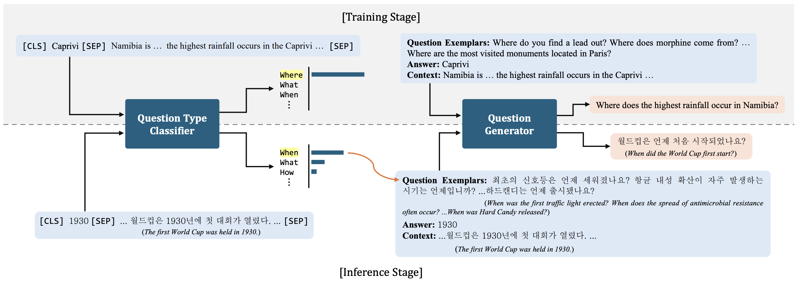
자연어 질의를 meaning representation(SQL, Python 코드 등)으로 변환하는 Semantic Parsing은 영어를 제외한 타언어의 학습 데이터 확보에 큰 비용이 발생함. 번역기나 병렬 코퍼스 같은 외부 리소스가 없는 zero-resource 환경에서도 영문 meaning representation으로부터 목표 언어의 utterance를 생성하여 모델의 cross-lingual transfer 능력을 향상시킬 수 있는 데이터 증강 방법론을 찾고자 함.
목표 언어의 utterance를 합성하는 생성기와, 품질 필터링 메커니즘으로 구성된 cross-lingual back-parsing(CBP) 방법론을 제안함. 다국어 PLM의 hidden representation에서 언어 식별 정보를 분리할 수 있다는 점에서 착안하여, 목표 언어의 단일 언어 코퍼스만으로 훈련 가능한 source-switched denoising objective를 설계하고 이를 통해 language-specific adapter를 학습시킴. 실험 결과, 제안된 모델은 Mschema2QA 및 Xspider 벤치마크에서 SOTA 대비 향상된 성능을 보였으며, 특히 번역기 기반 데이터 증강 기법이 적용된 모델보다 Mschema2QA 에서 더 높은 정확도를 기록함.
방법론 설계, 아키텍쳐 구현 및 모델 훈련, 논문 작성 등 참여함.
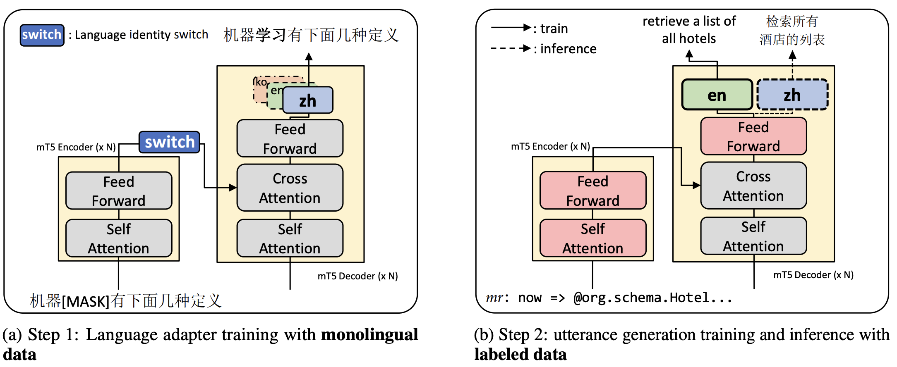
여러 문서에 흩어진 정보를 기반으로 한 복잡한 추론을 요구하는 multi-hop 질문을 자동으로 생성하는 설명 가능한 방법론을 개발하고자 함. 기존의 end-to-end 구조의 방법론들은 참조 문서가 늘어날수록 질문의 논리적 일관성이 저하되는 한계가 있었음. 또한 step-by-step rewriting은 논리성과 설명 가능성을 높이는 효과적인 접근법이지만, 중간 단계 복잡도의 질문 라벨링이 필수적이라는 한계점이 있었음. 이를 해결하기 위해 중간 단계 질문에 대한 라벨링 없이도 single-hop question을 점진적으로 확장하여 복잡도를 높이는 multi-hop question generation(QG) 프레임워크를 구축하고자 함.
Transformer 아키텍처를 recurrent neural network 구조로 수정한 end-to-end question rewriting (E2EQR) 모델을 제안함. 생성된 질문을 다음 단계의 입력으로 사용하는 일반적인 방법 대신, 질문의 디코딩 과정에서 계산된 hidden states를 후속 time-step으로 전달함으로써 내부적으로 점진적인 question rewriting이 수행될 수 있도록 함. 본 아키텍처는 중간 단계 복잡도의 ground truth 질문 없이도 end-to-end 학습이 가능함. 실험을 통해 3-hop 이상의 높은 복잡도 질문 생성 시나리오에서 논리적 정교함이 뛰어난 SOTA급 성능을 입증하고, 생성된 데이터가 QA 모델 성능 향상을 위한 데이터 증강에도 효과적임을 확인함.
문제 정의, 관련 연구 탐색, 방법론 설계 및 구현, 실험 및 분석, 논문 작성 등 전 과정을 수행함.
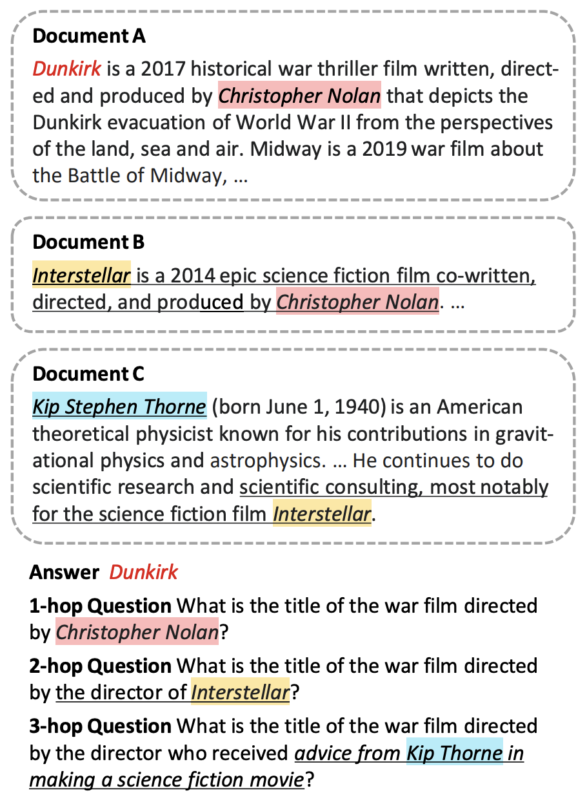
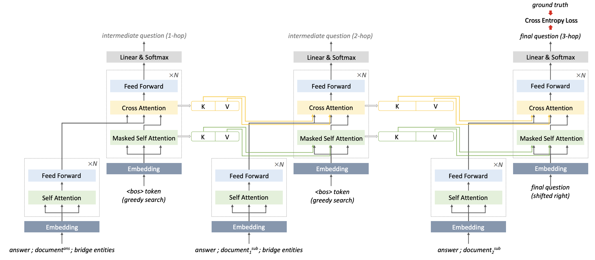
대화형 질의응답(CQA) 시스템 구축을 위한 데이터 제작 시 발생하는 높은 비용 문제를 해결하고자 함. 기존의 자동 생성 프레임워크는 주로 open-ended 질문 생성에 국한되어 있어, 실제 대화 환경에서 빈번하게 발생하는 closed-ended (예: yes/no) 질문이나 unanswerable 질문을 처리하는데 한계가 있음. 이를 극복하여 보다 실제적이고 다양한 문항 유형을 포함하는 CQA 데이터 합성 프레임워크를 구축하고자 함.
Open-ended, closed-ended, 그리고 unanswerable 대화형 질문을 모두 합성할 수 있는 MultiCQAG 프레임워크를 제안함. 기존 open-ended CQA 데이터 생성 프레임워크에 closed-ended QA pair 생성 플로우를 통합하고, 부적절한 질의응답 쌍을 필터링하는 동시에 unanswerable 질문을 수집하는 hierarchical answerability classification 알고리즘을 설계함. 실험 결과, 합성된 데이터로 학습한 CQA 모델이 4개 도메인에서 human-annotation 데이터로 훈련된 모델 대비 F1점수가 5.4점 낮은 77.2점을 달성했으며, 사람이 작성한 데이터와 유사한 분포를 보임을 입증함.
문제 정의, 관련 연구 탐색, 방법론 설계 및 구현, 실험 및 분석, 논문 작성 등 전 과정을 수행함.
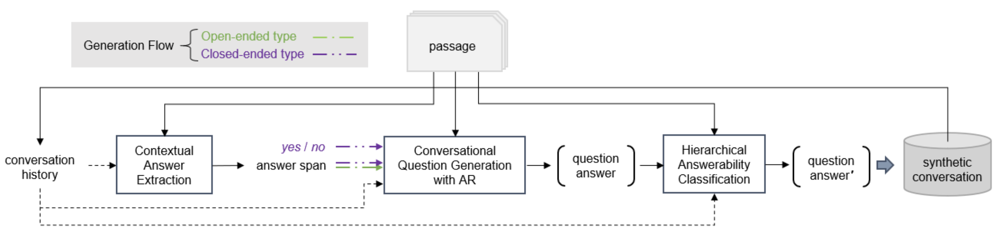
도메인 특화 대화형 질의응답(CQA) 시스템 구축에 필요한 대규모 데이터 확보의 비용 문제를 해결하고자 함. 이전 연구의 Conversational QA Generation(CQAG) 프레임워크는 문맥 기반 답변 추출(CAE)과 대화형 질의 생성(CQG)으로 구성된 iterative generation 구조로 이루어져 있어, 초기 답변 추출 단계에서 발생한 오류가 이후 대화 턴의 품질까지 저하시키는 error propagation 문제가 존재함.
Pretrained language model(PLM)이 자연스러운 언어 sequence를 생성하도록 학습되었다는 특성에 기반하여, CQG 모델이 질문 생성 직후 교정된 답변을 연달아 생성하도록 하는 CQG-AR(Answer Revision) 기법을 제안함. 실험 결과, AR 메커니즘이 적용된 CQAG 프레임워크가 합성한 데이터로 훈련된 CQA 모델이 F1 metric에서 기존 방식 대비 13.4점 향상된 성능을 보여주었음. 또한 Wikipedia 도메인에서 훈련된 모델을 타 도메인에 이식하는 domain adaptation 실험에서도 EM metric 기준 최대 13.1점의 유의미한 성능 향상을 기록하여 방법론의 범용성을 입증함.
문제 정의, 관련 연구 탐색, 방법론 설계 및 구현, 실험 및 분석, 논문 작성 등 전 과정을 수행함.
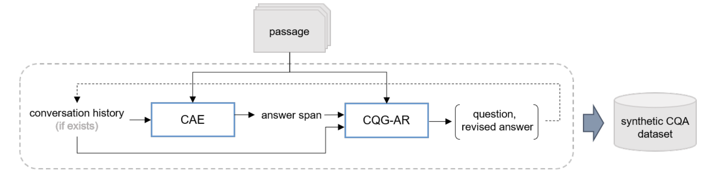
네이버와 엔에스데블이 공동으로 개발한 Whale UBT 내 탑재될 자동 출제 및 자동 채점 시스템을 위한 사전 연구, 핵심 엔진 구현 및 검증
UBT 클라우드 기반 문제은행 데이터 구조에 최적화된 문항 유사도 분석 알고리즘과 TOPIK 대표 문항 자동 생성 AI 모델 개발
목적지향 대화 시스템과 대화형 질의응답 시스템의 데이터 구축 비용을 줄이기 위해 최소한의 지도 학습으로 동작하는 고성능 대화 시스템 개발